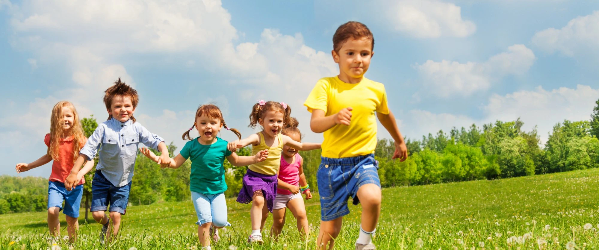
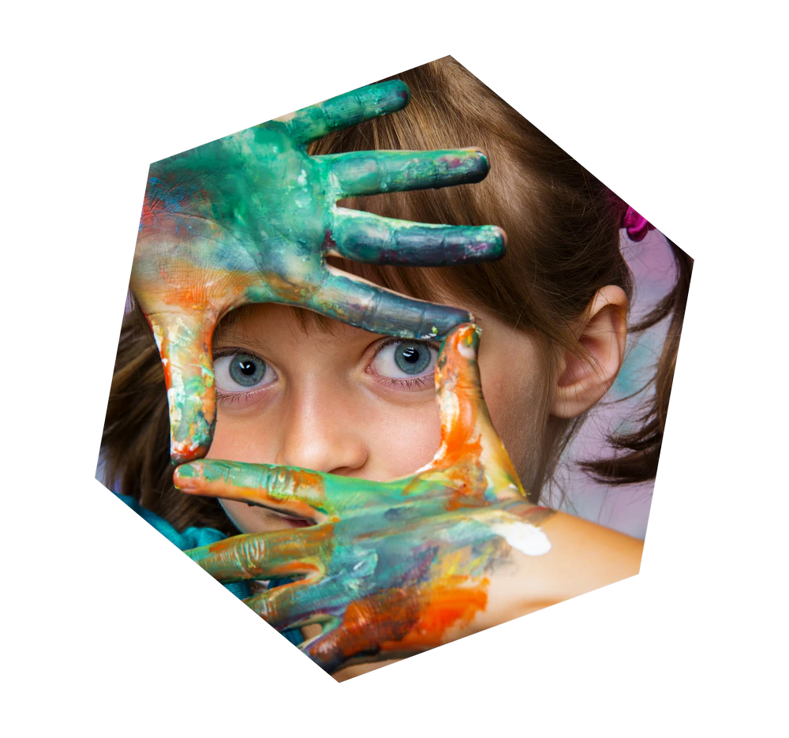
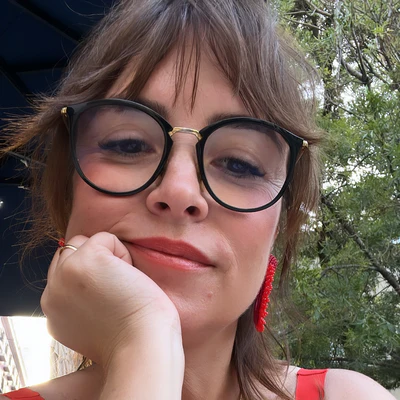
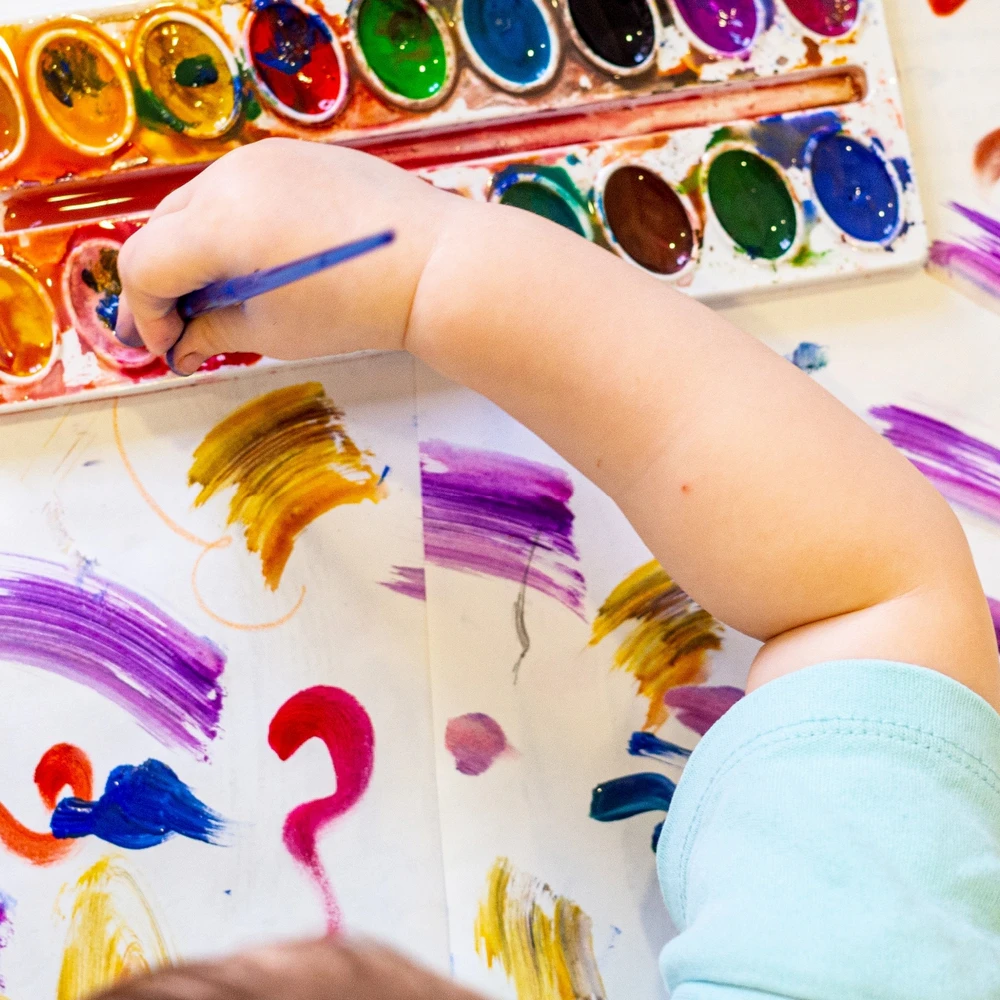
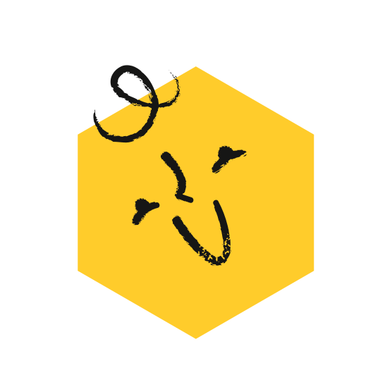
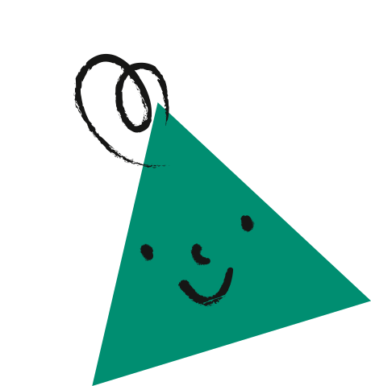
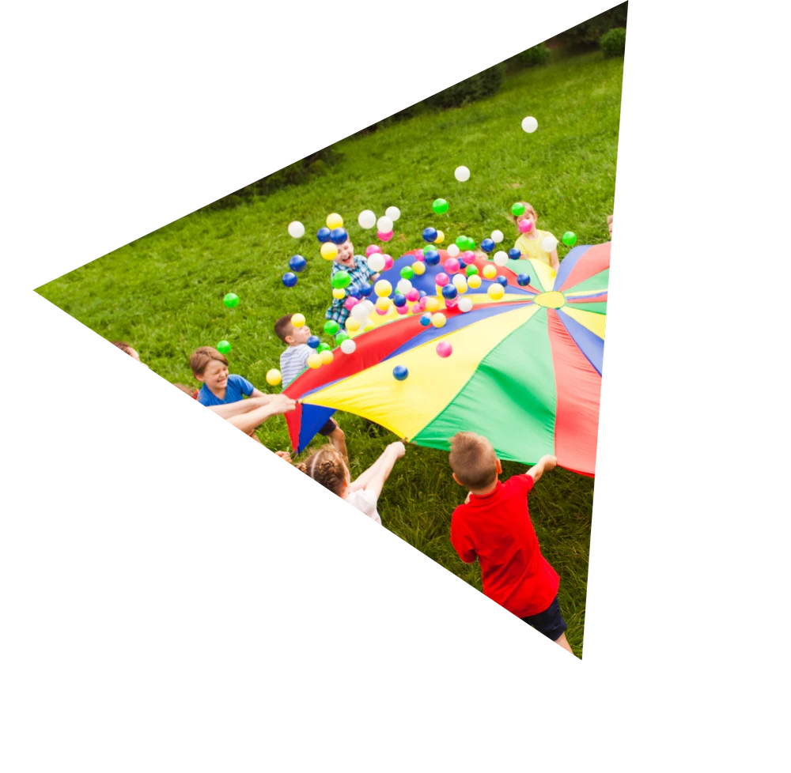
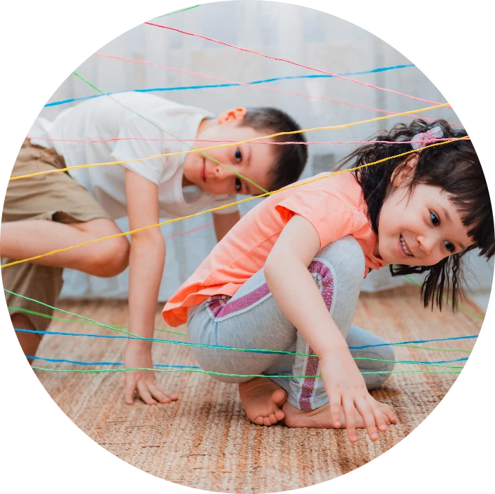
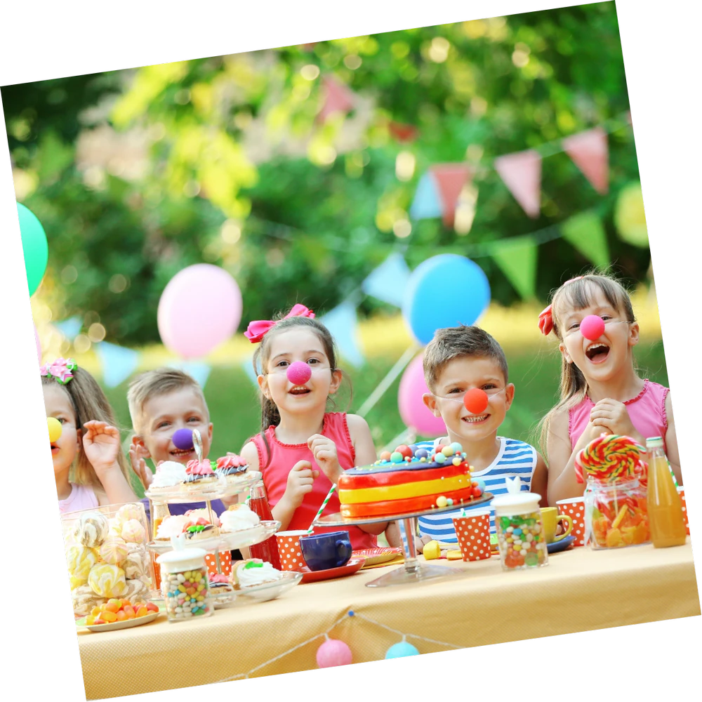
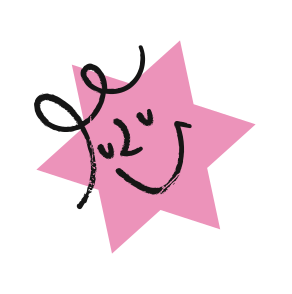

A criança que imagina é criativa e mostra o seu poder de criar.
O que é
Na Cri.ar.te procuramos promover o bem-estar infantil através da arte, procurando conhecer as emoções de cada criança oferecendo-lhe atividades sensoriais.
À medida que vai crescendo, a criança manifesta mais as suas vontades, os seus medos, as suas emoções e necessidades.
Desenhar, pintar, modelar, cantar, dançar, fantasiar e interpretar são algumas formas que utilizamos para ajudar a criança a desenvolver a sensibilidade, expressar as suas emoções e revelar habilidades. Educar com arte ajuda a criança a construir o seu mundo real de uma forma lúdica, descobrindo-se.
O incentivo das artes é, a melhor forma de ajudar a desfrutar de cada passo do processo e a saber lidar com a frustração. Mais importante do que participar é divertir-se pelo caminho! – esta é uma lição para a vida.
Saber falhar é a regra número 1 de um artista e essa regra é válida também para artistas de palmo e meio. Além de desenvolver ferramentas emocionais tão importantes como a resiliência, a paciência e o autocontrolo, as artes promovem o encorajamento, colocando a criança num "aqui e agora" onde não há certo, nem errado – o que eleva a autoestima e a autoconfiança.
Como já ouvimos algures, a arte vem de dentro do peito, e é assim que a Cri.ar.te procura que continue!

Quem somos

Maria João Patrão Freitas
Chamo-me Maria João, nasci em Lisboa, sou psicóloga clínica de coração, apaixonada por crianças, artes e animais. Apaixonei-me desde muito cedo pelo mundo dos mais pequenos. Mãe de uma família numerosa, entre os meus, os teus e os nossos, procurei ao longo da minha vivência tornar as artes algo presente no nosso cotidiano. Aos 18 anos comecei a trabalhar em tempos livres com crianças, mais tarde fui cocriadora e dinamizadora de campos de férias e tenho promovido encontros de crianças com as artes em forma de expressão para as emoções, através de atividades sensoriais. Com a Cri.ar.te pretendo criar arte em momentos dedicados aos pequenos artistas.
Cristina Matos
Chamo-me Cristina, gosto de livros, arte e pessoas. Nasci no Alentejo e deambulo entre pulular da vida na cidade de Lisboa, onde vivo, e a calma do Alentejo onde vou com frequência. Tenho como formação o estudo de Línguas mas fui alargando o meu leque de aprendizagens com os mais diversos interesses. Já fiz formações em áreas tão diversas como escrita criativa, cerâmica, aguarelas, meditação e alimentação consciente. Participo em vários clubes de leitura e sou leitora compulsiva. Tenho participado em alguns projetos de ocupação em tempos livres para crianças, no meu Alentejo, onde procuro potenciar o interesse das crianças pela leitura e escrita através da organização de oficinas de escrita criativa. Com a Cri.ar.te tenho o desejo de ser parte ativa no desenvolvimento de autoconfiança e amor próprio das crianças potenciando o artista que existe em cada uma delas.
As nossas oficinas


Oficina Criativa
Realizamos 2 ou 3 projetos criativos, com liberdade na escolha e utilização dos materiais. Sem limites à imaginação, podemos criar uma árvore que fala ou uma nuvem de chapéu!

Oficina Cuidar
O nosso foco está na natureza, pensando em tudo o que ela nos dá, mas também no cuidar. Vamos criar uma nova casa para uma planta e com amor aprender a cuidar dela.
Oficina História Escondida
Escolhemos um livro e através da sua leitura em conjunto vamos descobrir a história escondida no seu, e no nosso, interior. Vamos representá-la por mímicas, expressões, vontades e desejos.
Oficina da Escrita Criativa
Pensar e escrever torto por linhas direitas. Vamos criar uma história em conjunto de forma individual. No fim, vamos perceber que todos nós contribuímos para este todo!

Oficina de Artes
Pintar, desenhar, colorir. Sem limites, podemos pintar com o pincel, com as mãos ou com os pés. Vamos colocar à disposição folhas brancas e vários materiais de pintura e vamos aprender a preencher o vazio.
Oficina das Emoções
Através das expressões faciais e das cores vamos contar o que estamos a sentir. Vamos criar um amigo imaginário para levar no bolso.
Eventos
A Cri.ar.te cria um pouco por toda a parte. Não somos só oficinas e vamos onde nos receberem, a casa, a escolas e afins. Criamos aquela festa de aniversário especial e desenvolvemos atividades de acompanhamento individual.



